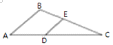
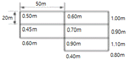
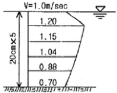
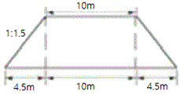
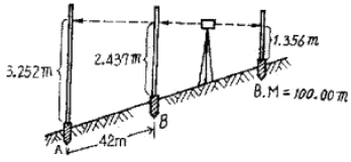
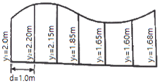
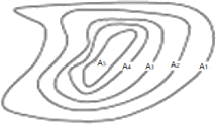
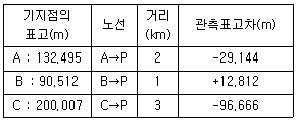

측량및지형공간정보산업기사 (2015-09-19 기출문제)
1과목: 응용측량
1. 터널 작업에서 터널 외 기준점 측량에 대한 설명으로 틀린 것은?
- 기준점을 서로 연결시키기 위해 필요한 경우 보조 삼각점을 기준점이 시통되는 곳에 설치한다.
- 고저측량용 기준점은 터널 입구 부근과 떨어진 곳에 2개소 이상 설치하는 것이 좋다.
- 측량의 정확도를 높이기 위하여 가능한 후시를 짧게 한다.
- 터널 입구 부근에 인조점을 설치한다.
(정답률: 82%)

2. 하천의 유속측량에서 횡단면의 연직선 내의 평균 유속을 구할 때 사용되는 일점법에 이용되는 유속의 관측 수심은?
- 수면에서 3/10의 깊이
- 수면에서 4/10의 깊이
- 수면에서 5/10의 깊이
- 수면에서 6/10의 깊이
(정답률: 83%)
3. 그림과 같은 삼각형 ABC 토지의 한 변 AC상의 점 D와 BC상의 점 E를 연결하고 직선 DE에 의해 삼각형 ABC의 면적은 2등분 하고자 할 때 CE의 길이는? (단, AB=40cm, AC=80m, BC=70m, AD=13m)

- 39.18m
- 41.79m
- 3.15m
- 45.18m
(정답률: 51%)
4. 터널공사에서 터널 외 기준점 측량에 사용되지 않는 방법은?
- 평판측량
- 삼각측량
- 트래버스측량
- 수준측량
(정답률: 73%)
5. 노선측량의 기점에서 곡선의 시점(B.C.)까지의 거리가 1312.5m, 접선 길이(T.L)가 176.4m, 곡선 길이(C.L)가 320m라면 기점에서 곡선의 종점(E.C.)까지의 거리는?
- 1488.9m
- 1560.7m
- 1591.5m
- 1632.5m
(정답률: 66%)
6. 수위관측장치의 설치장소에 대한 요건으로 옳지 않은 것은?
- 하상과 하안이 안전하고 세굴이 없는 장소일 것
- 상, 하류 약 100m 정도는 직선인 장소일 것
- 교각이나 기타 구조물에 의하여 수위의 영향을 받지 않는 장소일 것
- 지천의 합류점, 분류점으로 수위의 변화를 관측할 수 있는 장소일 것
(정답률: 67%)
7. 터널측량에서 지상 측점과 터널 내부의 측점이 일치하도록 하는 측량은?
- 터널 내 수준측량
- 터널 내외 연결측량
- 터널 내 측량
- 터널 외 측량
(정답률: 83%)
8. 주택지 조성을 목적으로 수준측량을 실시하여 시골기면을 결정한 결과가 그림과 같을 때 총 토량은? (단, 각 구역의 크기는 동일하다.)

- 322.5m3
- 375.5m3
- 3225m3
- 3725m3
(정답률: 64%)
9. 하천의 유속 분포가 그림과 같을 때 3점법으로 구한 평균 유속은? (단, 하천의 표면유속은 1.0m/s이다.)

- 0.98m/s
- 1.04m/s
- 1.095m/s
- 1.13m/s
(정답률: 64%)
10. 그림과 같은 단면을 갖는 길이 80m, 폭 10m의 도로를 건설하기 위한 성토량은? (단, 성토경사=1:1.5로 한다.)

- 1740m3
- 3480m3
- 3915m3
- 7830m3
(정답률: 54%)
11. 교각이 49° 30', 반지름이 150m인 원곡선 설치 시 중심말뚝 간격 20m에 대한 편각은?
- 6° 36' 18"
- 4° 20' 15"
- 3° 49' 11"
- 1° 46' 32"
(정답률: 58%)
12. 단곡선 설치에서 교각=60°, 접선장=210m일 때, 곡선의 반지름은?
- 121.24m
- 202.07m
- 282.15m
- 363.73m
(정답률: 58%)
13. 도로의 기울기 계산을 위한 수준측량 결과가 그림과 같을 때 A, B점간의 기울기는? (단, A, B점간의 경사거리는 42m이다.)

- 1.94%
- 2.02%
- 7.76%
- 10.38%
(정답률: 47%)
14. 노선의 곡선 중에서 각기 다른 2개의 원곡선으로 구성되고, 이 두 곡선의 연속점에서 공통접선을 가지며 곡선중심이 공통접선에 대하여 같은 방향에 있는 곡선을 무엇이라고 하는가?
- 복심곡선
- 단곡선
- 방향곡선
- 완화곡선
(정답률: 64%)
15. 심프슨 제2법칙을 이용하여 계산할 경우, 그림과 같은 도형의 면적은? (단, 각 구간의 거리(d)는 동일하다.)

- 11.24m2
- 11.29m2
- 11.32m2
- 11.47m2
(정답률: 47%)
16. 수로기준점표지에 해당되지 않는 것은?
- 해안선기준점
- 수로측량기준점
- 해양중력점
- 기본수준점
(정답률: 62%)
17. 댐 건설을 위한 조사측량에서 댐 사이트의 평면도 작성 방법으로 가장 적합한 것은?
- 항공사진측량
- 평판측량과 시거측량의 병용
- 스타디아측량
- 평판측량
(정답률: 77%)
18. 캔트의 크기가 C인 원곡선에서 곡선 반지름을 2배로 개선하기 위한 새로운 캔트의 크기는?
- C/4
- C/2
- 2C
- 4C
(정답률: 80%)
19. 20m 간격으로 등고선이 표시되어 있는 구릉지에서 구적기로 면적을 구한 값이 A5=200m2, A4=250m2, A3=600m2, A2=800m2, A1=1600m2일 때 토량은? (단, 각주공식을 이용할 것)

- 45000m3
- 46000m3
- 47000m3
- 48000m3
(정답률: 58%)
20. 교점이 기점에서 450m의 위치에 있고 교각이 30°, 중심말뚝 간격이 20m일 때, 외할(E)이 5m라면 시단현의 길이는?
- 2.8m
- 4.9m
- 8.0m
- 9.8m
(정답률: 59%)
2과목: 사진측량 및 원격탐사
21. 복수의 입체모델에 대해 입체모델 각각에 상호표정을 행한 뒤에 접합점 및 기준점을 이용하여 각 입체모델의 절대표정을 수행하는 항공삼각측량의 블록 조정방법은?
- 독립모델법
- 광속조정법
- 다항식조정법
- 에어로 폴리건법
(정답률: 59%)
22. 다음 중 제작과정에서 수치표고모형(DEM)이 필요한 사진지도는?
- 정사투영사진지도
- 약조정집성사진지도
- 반조정집성사진지도
- 조정집성
(정답률: 76%)
23. 초점거리 15cm인 카메라로 고도 1800m에서 촬영한 연직사진 상에 도로 교차점과 표고 300m인 산정이 찍혀 있다. 교차점은 사진 주점과 일치하고, 교차점과 산정의 거리는 사진 상에서 55mm이었다면 이 사진으로부터 작성된 축척 1:5000 지형도 상에서 교차점과 산정의 거리는?
- 110mm
- 130mm
- 150mm
- 170mm
(정답률: 49%)
24. 위성이나 항공기 등에서 취득하는 원격탐사 자료는 여러 가지 원인에 따른 기하학적 오차를 내포하고 있다. 이 중 위성이나 항공기 자체의 기계적인 오차도 포함되는데 이러한 기계적인 오차를 유발하는 원인이 아닌 것은?
- 광학시스템 상의 오차
- 비선형 스캐닝 메커니즘에 의한 오차
- 불균일 촬영속도에 의한 오차
- 지구자전 속도에 따른 오차
(정답률: 72%)
25. 광각카메라를 사용하여 축척 1:20000 사진을 만들었을 때 등고선 간격이 2m이었다면 C-계수는? (단, 초점거리는 150mm이다.)
- 1000
- 2000
- 1500
- 2500
(정답률: 48%)
26. N 차원의 피처공간에서 분류될 화소로부터 가장 가까운 훈련자료 화소까지의 유클리드 거리를 계산하고 그것을 해당 클래스로 할당하여 영상을 분류하는 방법은?
- 최근린 분류법(nearest-neighbor classifier)
- k-최근린 분류법(k-nearest-neighbor classifier)
- 최장거리 분류법(maximum distance classifier)
- 거리가중 k-최근린 분류법(k-nearest-neighbor distance-weighted classifier)
(정답률: 75%)
27. Pushbroom 스캐너의 특징이 아닌 것은?
- 한 번에 한 라인 전체를 기록한다.
- 경사관측을 통한 입체영상 취득이 용이하다.
- 각각의 라인이 중심투영인 항공사진의 가하와 유사하다.
- 순간시야각의 개념이 적용되어 넓은 지역의 관측에 용이하다.
(정답률: 52%)
28. 다음 중 넓은 지역에 대한 수치표고모델(DEM)을 가장 신속하게 얻을 수 있는 장비는?
- GPS
- LiDAR
- 토털스테이션
- 항공 아날로그 사진기
(정답률: 64%)
29. 디지털 영상에서 사용되는 비트맵 그래픽 형식이 아닌 것은?
- BMP
- JPEG
- TIFF
- DWG
(정답률: 64%)
30. 다음 중 상호표정인자가 아닌 것은?
- bx
- by
- bz
- ω
(정답률: 59%)
31. 항공사진측량에서 촬영기선 방향으로 중복하여 촬영하는 주된 이유로 옳은 것은?
- 주점을 구하기 위하여
- 물체 판독을 쉽게 하기 위하여
- 촬영된 사진에 누락되는 부분이 없도록 하기 위하여
- 사진의 주점이 인접사진의 사진에도 찍히도록 하여 입체시 하기 위하여
(정답률: 65%)
32. 초점거리 150m인 카메라로 평지에서 축척 1:20000의 사진을 촬영하였다. 사진에서 주점거리가 33mm일 때, 비고가 400m인 지점의 시차차는?
- 3.0mm
- 3.3mm
- 4.0mm
- 4.4mm
(정답률: 50%)
33. 종중복도가 70%이고 촬영종기선 길이와 촬영횡기선 길이의 비가 3:8일 때 횡중복도는 몇 %인가?
- 10%
- 20%
- 30%
- 40%
(정답률: 61%)
34. 서로 다른 공강해상도를 가진 영상을 하나의 영상으로 병합하거나 흑백의 고해상도 영상과 저해상도인 칼라 영상을 제작하는 기법으로 옳은 것은?
- 영상 부분집합(Image Subset)
- 영상 모자이크(Image Mosaic)
- 영상 융합(Image Fusion)
- 영상 필터링(Image Fitering)
(정답률: 63%)
35. 표고가 500m인 지형을 촬영하여 축척 1:18000의 사진을 얻었다면 촬영고도는? (단, 카메라의 초점거리 = 150mm)
- 2700m
- 3000m
- 3200m
- 3500m
(정답률: 61%)
36. 사진측량의 특징으로 옳지 않은 것은?
- 정량적이고 정성적인 관측이 가능하다.
- 대상지역의 면적과 관계없이 경제적이다.
- 정확도의 균일성이 있다.
- 축척변경이 용이하다.
(정답률: 81%)
37. 수치영상에서 표정을 자동화하기 위하여 필요한 방법은?
- 영상접합
- 영상융합
- 영상분류
- 영상압축
(정답률: 60%)
38. 다음 중 사진기 검증사료(camera calibration data)로 얻을 수 없는 정보는?
- 정확한 초점거리
- 등각점
- 사진상의 투영중심
- 사진지표의 좌표값
(정답률: 52%)
39. 항공사진측량용 디지털 카메라 중 선형배열 카메라(Linear Array Camera)에 대한 설명으로 틀린 것은?
- 선형의 CCD 소자를 이용하여 지면을 스캐닝하는 방식이다.
- 각각의 라인별로 중심투영의 특성을 가진다.
- 각각의 라인별로 서로 다른 외부표정요소를 가진다.
- 촬영방식을 기존의 아날로그 카메라와 동일하게 대상지역을 격자형태로 촬영한다.
(정답률: 68%)
40. 센서를 크게 수동방식과 능동방식의 센서로 분류할 때 능동방식 센서에 속하는 것은?
- TV 카메라
- 광학스캐너
- 레이다
- 마이크로파 복사계
(정답률: 80%)
3과목: GIS 및 GPS
41. 벡터데이터의 위상구조(topology)에 관한 설명으로 옳지 않은 것은?
- 점, 선, 면으로 나타난 객체들 간의 공간관계를 파악할 수 있다.
- 다양한 공간현상들 간의 공간관계 정보를 크게 인접성(adjacency), 연결성(connectivity), 포함성(containment)으로 구성한다.
- 위상구조가 구축되면 데이터가 갱신될 때마다 새로운 위상구조가 구축되어 속성 테이블과 새로운 노드가 추가되거나 변경된다.
- 위상구조를 완벽하게 갖춘 벡터 데이터로 가장 대표적인 것은 geoTIFF이다.
(정답률: 70%)
42. 다음 중 GPS 활용 분야와 가장 거리가 먼 것은?
- 건물 실내 측량
- 기준점 측량
- 구조물 변위 모니터링
- 지형공간정보 획득 및 시설물 유지 관리
(정답률: 75%)
43. 래스터 데이터의 압축방법에 해당되지 않는 것은?
- Quadtee
- Spaghetti 모형
- Chain codes
- Run-length codes
(정답률: 66%)
44. GIS의 3대 기본 구성 요소로 거리가 먼 것은?
- 인터넷
- 하드웨어
- 소프트웨어
- 데이터베이스
(정답률: 71%)
45. 지형공간정보시스템(Geo-Spatial Information System)의 응용 및 활용분야와 가장 거리가 먼 것은?
- 도면자동화-시설물관리 시스템(Automate Mapping-Facilities Management System)
- 토지정보시스템(Land Infomation System)
- 도시정보시스템(Urban Infomation System)
- 범지구위치결정시스템(Global Positioning System)
(정답률: 59%)
46. 임의 지점에서 GPS관측을 수행하여 타원체고(h) 75.234m를 획득하였다. 이 지점의 지구 중력장 모델로부터 산정한 지오이드고(N)가 52.578m라 한다면 정표고(H)는?
- -22.656m
- 22.656m
- 63.906m
- 127.812m
(정답률: 69%)
47. DEM(Digital Elevation Model)과 TIN(Triangulated Irregular Network)의 주요 활용 분야가 아닌 것은?
- 도로망 분석
- 경사도 분석
- 가시권 분석
- 도공량 산정
(정답률: 39%)
48. 다음 용어에 대한 설명 중 옳지 않은 것은?
- Clip : 원래의 레이어에서 필요한 지역만을 추출해 내는 것이다.
- Erase : 레이어가 나타내는 지역 중 임의지역을 삭제하는 과정이다.
- Split : 하나의 레이어를 여러 개의 레이어로 분할하는 과정이다.
- Difference : 두 개의 레이어가 교차하는 부분에 대한 지오메트리를 얻는다.
(정답률: 69%)
49. GIS에서 표준화가 필요한 이유로 가장 거리가 먼 것은?
- 데이터의 공동 활용을 통하여 데이터의 중복구축을 방지함으로써 데이터 구축비용을 절약한다.
- 표준 형식에 맞추어 하나의 기관에서 구축한 데이터를 많은 기관들이 공유하여 사용할 수 있다.
- 서로 다른 기관 안에 데이터 유출의 방지 및 데이터의 보안을 유지하기 위하여 필요하다.
- 데이터제작 시 사용된 하드웨어나 소프트웨어에 구애받지 않고 손쉽게 데이터를 사용할 수 있다.
(정답률: 71%)
50. GPS를 사용함에 따른 특징이 아닌 것은?
- 정보가 수치데이터로 구축되어 지도 축척의 손쉬운 변환이 가능하다.
- 기존의 수작업으로 하는 작업을 컴퓨터를 이용하여 손쉽게 할 수 있다.
- GIS와 CAD, CAM의 공통점은 지리적 위치관계를 갖고 있는 공간자료와 속성자료를 서로 연관시켜 부가가치 높은 정보를 창출하는 것이다.
- 다양한 공간적 분석이 가능하여 도시계획, 환경, 생태 등의 여러 분야에서 의사결정에 활용될 수 있다.
(정답률: 66%)
51. GIS와 관련된 용어의 설명으로 옳지 않은 것은?
- 위치정보는 지물 및 대상물의 위치에 대한 정보로서 위치는 절대위치(실제 공간)와 상대위치(모형 공간)가 있다.
- 도형정보는 지형, 지물 또는 대상물의 위치에 관한 자료로서, 지도 또는 그림으로 표현되는 경우가 많다.
- 영상정보는 항공사진, 인공위성영상, 비디오 및 각종 영상의 수치 처리에 의해 취득된 정보이다.
- 속성정보는 대상물의 자연, 인문, 사회, 행정, 경제, 환경적 특성을 공간적 분석이 불가능한 단점이 있다.
(정답률: 72%)
52. 지리정보시스템의 정보유형 중 하나인 속성정보와 가장 거리가 먼 것은?
- 설악산 국립공원 내 야생동식물 분포 수량
- 신행정수도 주변의 대규모 위락단지 개발후보지 위치도
- 강원도의 천연 지하자원별 매장량
- 서울특별시의 연도별 지하철 이용자 수
(정답률: 47%)
53. GIS에서 이용되는 보간법(interpolation)의 종류가 아닌 것은?
- Invese distance weight
- Kriging
- Vertex
- Spline
(정답률: 54%)
54. GPS 위성으로부터 전송되는 L2 신호의 주파수가 12.27MHz이고, 광속을 299792458m/s라고 할 때 L2 신호 10000 파장에 대한 거리는?(오류 신고가 접수된 문제입니다. 반드시 정답과 해설을 확인하시기 바랍니다.)
- 2442.102m
- 3442.102m
- 4442.102m
- 5442.102m
(정답률: 50%)
55. 래스터식 자료구조에 대한 설명 중 옳지 않은 것은?
- 점은 하나의 셀로 표현된다.
- 각 셀은 행과 열의 값으로 참조된다.
- 셀의 크기는 길이와 면적의 계산에 영향을 미치지 않는다.
- 선은 한 방향으로 배열되어 인접하고 있는 셀들에 의해 표현된다.
(정답률: 70%)
56. GIS 데이터 취득에 대한 일반적인 설명으로 옳지 않은 것은?
- 스캐닝이 디지타이징에 비하여 작업 속도가 빠르다.
- 디지타이징은 전반적으로 자동화된 작업과정이므로 숙련도에 크게 좌우되지 않는다.
- 스캐닝에 의한 수치지도 제작을 위해서는 래스터를 벡터로 변환하는 과정이 필요하다.
- 디지타이징은 지도와 항공사진 등 아날로그 형식의 자료를 전산기에 의해서 직접 판독할 수 있는 수치 형식으로 변환하는 자료획득 방법이다.
(정답률: 65%)
57. 레이저를 이용하여 대살물의 3차원 좌표를 실시간으로 획득할 수 있는 측량 방법으로 삼림이나 수목지대에서도 투과율이 좋으며 자료 취득 및 처리과정이 완전히 수치 방식으로 이루어질 수 있어 최근 고정밀 수치표고모델과 3차원 지리정보 제작에 많이 활용되고 있는 측량방법은?
- SAR(Synthetic Aperture Radar)
- RAR(Real Aperture Radar)
- EDM(Electro-magnetic Distance Meter)
- LiDAR(Light Detection And Ranging)
(정답률: 63%)
58. 다음 중 공간분석의 하나인 중첩분석에 해당되지 않는 것은?
- 식생도와 도시계획도를 합하는 과정
- 수치지형도와 하천도를 합하는 과정
- 도형정보와 속성정보를 합하는 과정
- 토양 비옥도 상에 토지 이용도를 합하는 과정
(정답률: 48%)
59. 지리정보시스템의 자료취득 방법과 가장 거리가 먼 것은?
- 투영법에 의한 자료취득 방법
- 항공사진측량에 의한 방법
- 일반측량에 의한 방법
- 원격탐사에 의한 방법
(정답률: 50%)
60. GPS를 이용한 위치결정에 영향을 주는 오차와 관계가 없는 것은?
- 시준오차
- 다중경로오차
- 위성궤도오차
- 수신기 시계오차
(정답률: 47%)
4과목: 측량학
61. 기지수준점 A, B, C에서 신설점 P의 수준측량 결과가 표와 같을 때 P점의 최확값은?

- 103.324m
- 103.334m
- 103.339m
- 103.342m
(정답률: 54%)
62. 등고선 간격이 5m일 때 경사제한을 최대 5%까지의 지형으로 개발한다면, 각 등고선간의 최소 수평거리는?
- 400m
- 300m
- 200m
- 100m
(정답률: 57%)
63. 평탄한 지역에서 15km 떨어진 지점을 관측할 때 발생되는 곡률오차의 크기는? (단, 지구의 반지름=6370km)
- 17.66m
- 68.28m
- 17.34m
- 100.54m
(정답률: 31%)
64. 트래버스측량에서 거리와 각 관측의 정밀도가 균형을 이룰 때 거리관측의 허용오차를 1/5000로 한다면 각 관측에 허용되는 오차는?
- 25"
- 30"
- 38"
- 41"
(정답률: 46%)
65. 수준측량의 용어에 대한 설명으로 옳지 않은 것은?
- 기준면(datum plane)은 지평면이라고도 하며 연직선에 직교하는 평면을 말한다.
- 기준면(datum plane)은 수년 동아 관측하여 얻은 평균해수면을 사용한다.
- 수평면(horizontal plane)은 연직선에 직교하는 평면을 말한다.
- 수준면(level suface)은 연직선에 직교하는 모든 점을 잇는 곡면을 말한다.
(정답률: 24%)
66. 전자기파 거리측량기에 의한 거리측량에서 거리의 크기에 비례하여 영향을 주는 오차는?
- 기계 상수의 오차
- 취상차 관측의 오차
- 공기 굴절률의 오차
- 반사경 상수의 오차
(정답률: 54%)
67. 최소제곱법에 대한 설명으로 옳은 것은?
- 같은 정밀도로 측정된 측정값에서는 오차의 제곱의 합이 최대일 때 최확값을 얻을 수 있다.
- 최소제곱법을 이용하여 정오차를 제거할 수 있다.
- 동일한 거리를 여러 번 관측한 결과를 최소제곱법에 의해 조정한 값은 평균과 같다.
- 관측방정식에 의한 결과와 조건방정식에 의한 결과는 일치하지 않을 수 있다.
(정답률: 44%)
68. 삼각측량에서 삼각형의 내각 관측결과 55° 12' 40", 35° 23’ 30”, 89° 24' 20"이었다. 면 각 각의 최확값으로 옳은 것은?
- 55° 12' 10", 35° 23’ 30”, 89° 24' 20"
- 55° 12' 15", 35° 23’ 35”, 89° 24' 10"
- 55° 12' 30", 35° 23’ 20”, 89° 24' 10"
- 55° 12' 20", 35° 23’ 25”, 89° 24' 15
(정답률: 58%)
69. 두 지점의 경사거리 100m에 대한 경사 보정이 2cm일 경우 두 지점 간의 높이 차는?
- 1.414m
- 2.0m
- 2.828m
- 3.0m
(정답률: 37%)
70. 단열삼각망의 조정순서로 옳은 것은?
- 각조점→변조정→좌표조정→방향각조정
- 변조정→방향각조정→각조정→좌표조정
- 각조정→좌표조정→방향각조정→변조정
- 각조정→방향조정→변조정→좌표조정
(정답률: 45%)
71. 정확도가 ±(3mm+3ppm×L)로 표현되는 광차거리 측량기로 거리 500m를 측량하였을 때 예상되는 오차의 크기는?
- ±2.0mm 이하
- ±2.5mm 이하
- ±4.0mm 이하
- ±4.5mm 이하
(정답률: 40%)
72. 측량 시 발생하는 오차의 종류로 수학적, 물리적인 법칙에 따라 일정하게 발생되는 오차는?
- 정오차
- 참오차
- 과대오차
- 우연오차
(정답률: 73%)
73. 1595m 산정상과 1390m 산기슭 사이에 주곡선 간격의 등고선 개수는? (단, 축척은 1:50000이다.)
- 9개
- 10개
- 19개
- 20개
(정답률: 53%)
74. 지구를 장반경이 6370km, 단반경이 6350km인 타원형이라 할 때 편평률은?
- 약 1/320
- 약 1/430
- 약 1/500
- 약 1/630
(정답률: 47%)
75. 공공측량의 기준에 대한 설명으로 옳은 것은?
- 기본측량 성과나 다른 공공측량 성과를 기초로 실시하여야 한다.
- 일반측량의 성과를 기초로 실시하여야 한다.
- 일반측량 성과나 기본측량 성과를 기초로 실시하여야 한다.
- 일반측량 성과나 공공측량 성과를 기초로 실시하여야 한다.
(정답률: 64%)
76. 공간정보의 구축 및 관리 등에 관한 법률의 벌칙 중 3년 이하의 징역 또는 3천만원 이하의 벌금에 처하는 경우는?
- 속임수, 위력 등으로 측량업 또는 수로사업과 관련된 입찰의 공정성을 해친 자
- 입찰 행위를 방해한 자
- 측량기준점표지를 이전 또는 훼손하거나 그 효용을 해지는 행위를 한 자
- 고의로 측량성과 또는 수로조사 성과를 사실과 다르게 한 자
(정답률: 64%)
77. 기본측량에서 측량성과의 고시에 포함되어야 할 사항이 아닌 것은?
- 측량의 정확도
- 측량시행자 및 측량경비
- 설치한 측량기준점의 수
- 측량성과의 보관 장소
(정답률: 68%)
78. 지리학적 경위도, 직각좌표, 지구중심 직교좌표, 높이 및 중력 측정의 기준으로 하용하기 위하여 위성기준점, 수준점 및 중력점을 기초로 정한 기준점은?
- 삼각점
- 경위도원점
- 통합기준점
- 지자기점
(정답률: 63%)
79. 세계측지계라 함은 지구를 편평한 회전타원체로 상정하여 실시하는 위치측정의 기준이다. 다음 중 회전타원체의 요건에 대한 설명으로 잘못된 것은?
- 회전타원체의 장반경은 6,378,137미터이다.
- 회전타원체의 중심이 지구의 질량중심과 일치하여야 한다.
- 회전타원체의의 편평률은 298.257222101분의 1이다.
- 회전타원체의의 장축이 지구의 자전축과 일치하여야 한다.
(정답률: 56%)
80. 토털 스테이션에 대한 성능검사의 주기로 옳은 것은?
- 3년에 2회
- 2년
- 5년에 2회
- 3년
(정답률: 74%)